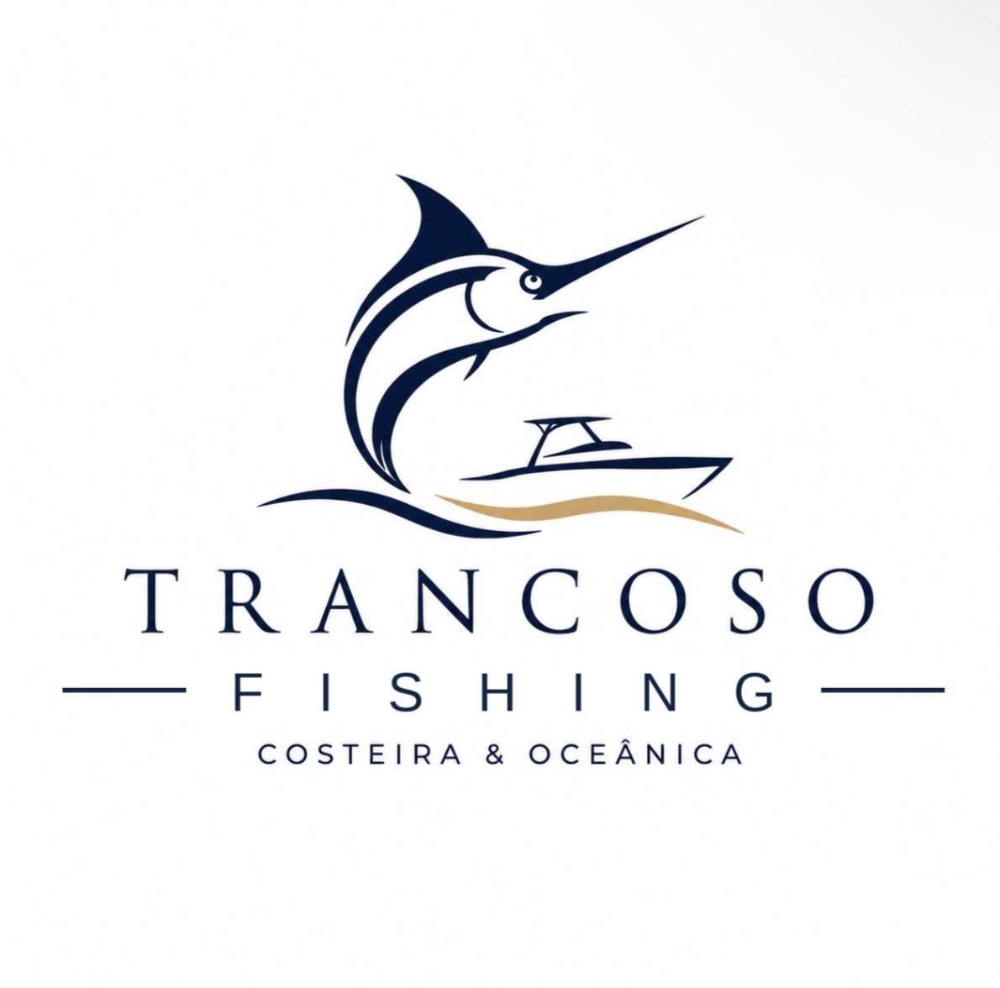

QUEM SOMOS?
Trancoso por outro ângulo
Amigos que se juntaram para fazer o que gostam.
Existe um outro Trancoso, além das praias e do Quadrado. Um Trancoso de mar aberto, grandes peixes e experiências para poucos.
A Trancoso Fishing nasceu da paixão pela pesca, pelo oceano e pela vontade de mostrar a região por um novo ângulo.
Estamos desenvolvendo uma operação de pesca oceânica focada nos grandes predadores do litoral, unindo pescaria e alta gastronomia em alto-mar.

TRANCOSO FISHING
OPERAÇÕES
Experiências pensadas para viver o mar de Trancoso de verdade.
NA PRÁTICA
Nosso trabalho
Mar aberto, grandes peixes, equipe reunida e gastronomia a bordo. Um pouco do que acontece em cada experiência.
FALE COM A GENTE
Pronto para conhecer outro Trancoso?
Entre em contato para saber mais sobre as operações, disponibilidade e próximas experiências.